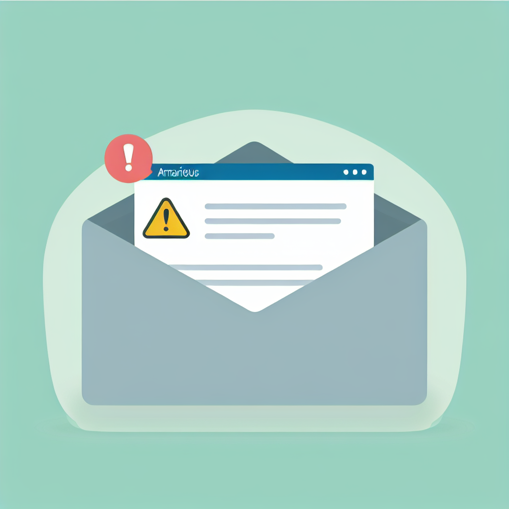

How to Spot Tech Scams: Red Flags Every Senior Should Know
Scammers love to target seniors because they know many older adults are less familiar with technology. But here's the good news: once you know what to look for, spotting scams becomes much easier. In my work helping seniors throughout North York, I've seen every trick in the book — and I'm going to teach you how to recognize them.
Knowing the warning signs is the best protection against tech scams.
The Golden Rule: When in Doubt, Hang Up or Delete
Before we dive into specific scams, remember this: legitimate companies will never pressure you to act immediately. They won't threaten you. And they won't ask for sensitive information like passwords or Social Insurance Numbers over the phone or email.
Scam #1: The "Tech Support" Call
This is one of the most common scams targeting seniors. Here's how it works:
- You receive a phone call from someone claiming to be from "Microsoft," "Apple," or "Windows Support"
- They tell you your computer has a virus or has been hacked
- They ask for remote access to your computer
- They demand payment to "fix" the problem
Be suspicious of unexpected calls claiming to be from tech support companies.
What to Do:
- Hang up immediately — don't engage with them
- Never give them remote access to your computer
- Never give them payment information
- If you're worried your computer might actually have a problem, call a trusted local tech helper (like me!)
Scam #2: The "Your Account Has Been Compromised" Email
You get an email that looks like it's from your bank, Amazon, PayPal, or another company you trust. It says your account has been locked or compromised and you need to click a link to verify your information.
Look for warning signs in emails asking you to click links or verify account information.
How to Spot Fake Emails:
- Check the sender's email address: Hover over the sender's name to see the actual email. Scammers use addresses that look similar but aren't quite right
- Look for spelling mistakes: Legitimate companies proofread their emails carefully
- Hover over links before clicking: See where the link actually goes — don't click if it looks suspicious
- When in doubt: Open a new browser window and log into your account directly — never through email links
Scam #3: The "You've Won a Prize" Scam
You get a call, email, or pop-up saying you've won a lottery, sweepstakes, or prize. But there's a catch — you need to pay a fee to claim it, or provide your bank information.
Scam #4: The "Grandparent Emergency" Scam
You get a call from someone claiming to be your grandchild. They're in trouble — they've been arrested, had an accident, or are stranded somewhere — and they need money sent immediately.
What to Do:
- Ask for their name and say you'll call them back
- Call your grandchild directly on their regular number
- Or call their parents to verify the story
- Never send money through wire transfers, gift cards, or cryptocurrency — these are untraceable
Scam #5: Fake Investment Opportunities
You receive a call or see an ad promising amazing returns on an investment — often in cryptocurrency, gold, or some "exclusive" opportunity. They pressure you to act fast before the opportunity disappears.
Scam #6: The "Verify Your Information" Text
You get a text message from what looks like your bank, Canada Post, or a delivery company. It says there's a problem with your account or package, and you need to click a link to verify your information.
What to Do If You've Been Scammed
If you think you've fallen for a scam, don't be embarrassed — it happens to intelligent people every day. Here's what to do:
- Contact your bank immediately: If you gave payment information, call your bank or credit card company right away. They may be able to stop the transaction
- Change your passwords: If you gave password information, change your passwords immediately on any affected accounts
- Report it: File a report with the Canadian Anti-Fraud Centre at 1-888-495-8501 or antifraudcentre-centreantifraude.ca
- Get help securing your computer: If a scammer had remote access to your computer, have a trusted professional check it
How to Protect Yourself Going Forward
- Never give personal information over the phone unless YOU called a verified number
- Use strong, unique passwords for each account (a password manager can help)
- Enable two-factor authentication on important accounts like email and banking
- Keep your software updated — updates often include security fixes
- When in doubt, ask someone you trust before taking action
When to Ask for Help
If you're not sure whether something is a scam, it's always okay to ask for help. Many of my clients in North York call me to verify something before they take action. I'd rather you call and ask than fall for a scam.
"Is This a Scam?" Verification Help
If you received a suspicious call, email, or text and aren't sure if it's legitimate, I'm here to help. I provide scam verification and security setup services for seniors throughout North York.
- Scam verification — I'll help you figure out if something is real
- Security setup — Protect your accounts and devices
- Recovery help — If you've been scammed, I'll help secure everything
$45/hour with satisfaction guaranteed
Call or Text: 289-203-4346Serving North York, Willowdale, Bayview Village, Don Mills & surrounding areas
Related Articles
- How to Organize Photos on iPhone: A Complete Guide for Seniors
- Why Is My iPhone So Slow? 6 Proven Ways to Speed It Up
- How to Transfer Photos from iPhone to Computer
- Computer Running Slow? 5 Simple Fixes That Actually Help
Anthony is a tech support specialist serving seniors in North York and surrounding areas. He holds a Bachelor of Commerce from TMU and certifications in AI Engineering from IBM and Google.